简介¶
ODPS XLab/XLib可以帮助用户轻松处理海量数据，包含了统计、机器学习、矩阵等常用计算功能。
- XLab是ODPS提供的客户端。无论您是否有大数据分析的基础，都可以通过XLab图形界面，轻松上手；XLab还提供了脚本编辑执行功能，灵活方便、帮您成为大数据分析的高手。
- XLib是XLab的后台分布式算法库。可以通过XLab或ODPS客户端调用；由于二者使用相同的函数定义，XLab上的函数命令和脚本可以在ODPS客户端上直接执行。
XLab能做什么呢？XLab的主要操作均是基于ODPS的 表(Table) ，即输入数据和输出数据均存储在ODPS的表中。它支持 基本统计 、统计分析 、数据处理 、格式转换 、分类预测 、 回归分析 、聚类分析 、关联分析 、矩阵计算 等。
- 基本统计包含 全表基本统计 及 单列基本统计量 (总个数，有效值个数，缺失值个数，和，平方和，立方和，最小值，最大值，极差，均值，方差，标准差，变异系数，标准误差，偏度，峰度，二阶矩，三阶矩，四阶矩，二阶中心距，三阶中心距，四阶中心距等)、频率 、直方图 、 交叉表 、 排行榜 、 百分位 、 散布图矩阵 、 相关矩阵 、 Top100 、 Top100 、 bottom100 、 条件分位数 、 多列排序和分位 、 全表统计汇总 、 连续变量分组统计 、 按partition分类统计 、 分类变量统计 、 扩展直方图 、 对比交叉表 。
- 统计分析包括：对应分析 、多维对应分析 、 多重共线性 和 主成分分析 。
- 数据处理包括：数据过滤 、 连续变量分组 、 唯一结果集 、 前N条记录 、 随机采样 、 加权采样 、 数据拆分 、 追加ID列 、 多表列合并 、多表行合并 、 排序 、 信息值 、 变量转换 、 缺失值填充 、 归一化 、 标准化 、 分箱 、 数据生成 。
- 格式转换包括：ODPS 表和分区 、 Xlib稀疏矩阵表 、 XLib稠密矩阵表 、 三元组表 、 索引三元组表 、 KV表 、 索引KV表 间的相互转换。
- 分类预测包括： 随机森林 、 逻辑回归 (二分类回归、多分类回归和逐步回归)、 线性支持向量机(Linear SVM) 、 朴素贝叶斯(Naive Bayes) 、 贝叶斯判别(Bayes) 、 费希尔判别(Fisher) 、 马氏距离判别(MDistance) 。
- 回归分析包括： 线性回归 和 梯度渐近回归树 。
- 聚类分析主要是 KMeans 。
- 关联分析 是指关联式规则(Association Rules, AR)。
- 矩阵计算主要支持这些运算：矩阵构造，获取矩阵信息(类型、行数、列数和非零元数目)，打印矩阵基本信息(矩阵类型、行数、列数和非零元数目)，加减乘除运算，向量点积，矩阵和向量范数，矩阵的迹，矩阵转置，矩阵的svd分解。
安装运行¶
解压XLab.zip，能看到如下目录及文件：
lib/ start.bat XLab.jar
lib目录包含XLab依赖的库文件，start.bat是Windows下的可执行文件，XLab.jar是XLab的jar包，可在Windows和Linux下执行。
安装环境：
- Windows或Linux 操作系统；
- JDK 1.6版本。
运行方式：
- Windows用户，可点击start.bat或XLab.jar，进入登录界面；
- Linux用户，执行java -jar XLab.jar，进入登录界面。
运行后，会增加以下目录及文件：
log/ history/ login.cfg
log目录包含XLab运行的日志文件，history目录包含临时表和job信息，login.cfg是登录配置文件。
登录¶
运行后，会出现登录界面，如下图：
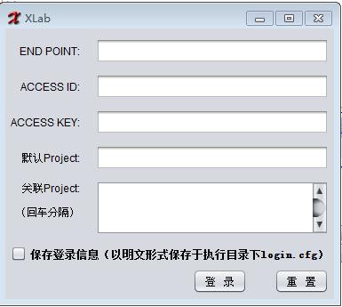用户需要填写以下登录信息：
END PONIT=<对外开放的URL>
ACCESS ID=<阿里云账号相关信息>
ACCESS KEY=<阿里云账号相关信息>
默认Project=<默认项目空间名称，配置此项后不必特殊指定数据导入、导出表所在的项目空间>
关联Project=<关联项目空间名称，是指同一END PONIT下除默认Project之外的Project，如果填写此项，则XLab的Table列表会自动在表前面加上Project名>
不同的 END PONIT可以连接到不同的ODPS Service，输入完成后点击登录按钮或者输入回车键，后台验证完成后界面跳转到主界面。其中Project Name为默认project, 即之后的操作都会运行在此project下，关联project可以设置多个，用换行符(回车)分割，用户可以点击选择保存登录信息，用以下一次登录，登录信息会以明文形式保存于执行目录下的login.cfg文件，请谨慎选择。
主界面¶
登录之后，进入主界面。主界面分为四个区域：工具栏，ODPS Table列表，窗口管理器和工作界面。如下图：
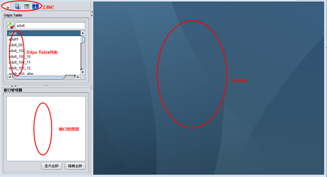工具栏¶
工具栏包含XLab的各项应用工具：
- 脚本运行
- 帮助
- 查看log
- 关于
脚本运行¶
XLab提供了一个脚本语言的基础编程环境，支持Python脚本语法。用户可以通过脚本运行窗口实现脚本编辑和执行。如下图：
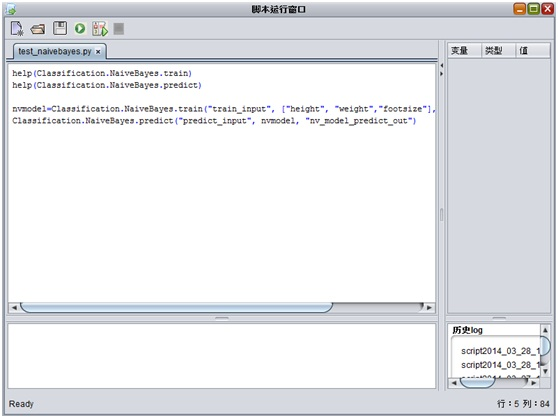补全以及函数提示快捷键 ：Ctrl+p
脚本运行工具栏提供以下几个功能：
- 新建脚本
- 打开脚本
- 保存脚本
- 运行脚本
- 运行选中脚本
- 停止运行
XLab脚本除了支持调用XLib的函数，还支持直接调用ODPS SQL，返回SQL运行结果。ODPS SQL的详细说明，可参考其官网。
调用ODPS SQL的函数为sql(str)，可以通过help(sql)查看使用帮助。
def sql(str):
- 参数:
- str: 字符串
- 返回:
- 计算结果
示例1:
sql("create table sql_table(col double)")
示例1的结果为生成一张表：sql_table
示例2:
print sql('select * from dual')
示例2的结果:
"f1"
0
注意事项:
- 函数计算结果需要通过执行命令print sql(str)打印出来
帮助¶
如果用户对XLab不熟悉，可点击”帮助”按钮，可打开XLab使用手册。
查看log¶
XLab提供查看log的功能，当用户执行任务时，点击”查看log”按钮，可以查看执行log，如下图：
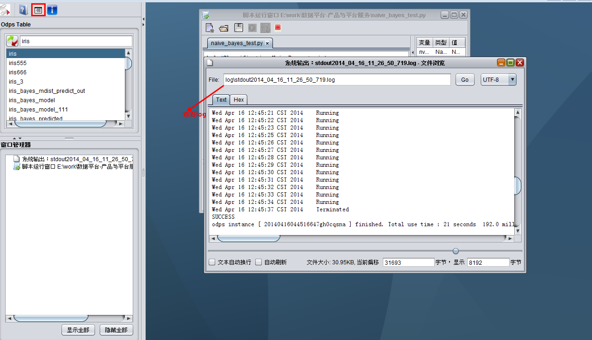关于¶
关于：提供XLab版本等信息。
ODPS Table列表¶
ODPS Table列表中展示默认Project和关联Project下面的Table列表，用户也可在搜索框中输入关键词，搜索相关Table，如下图：
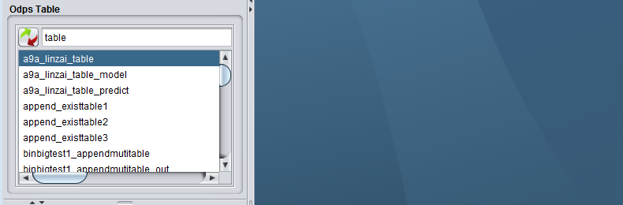窗口管理器¶
窗口管理器包括所有在工作桌面上运行的窗口列表。中间树状结构显示XLAB内部各个窗体及其对应关系。如图中的两个数据表格窗口在树中有父子节点关系，则表示子节点对应窗口数据由父节点操作后生成。用户点击树节点可以显示隐藏对应窗口，也可以点击下方显示隐藏全部窗口。如下图：
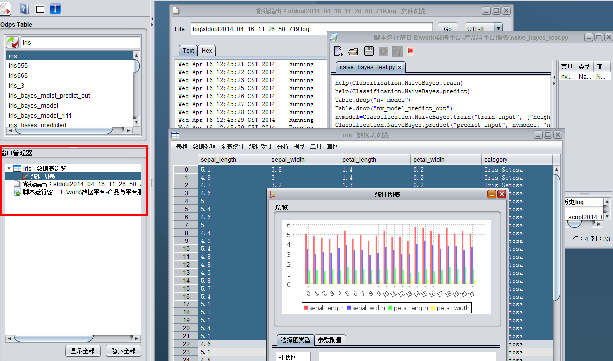工作界面¶
工作界面用于容纳XLab各类窗口，包括表，脚本，log等，如下图：
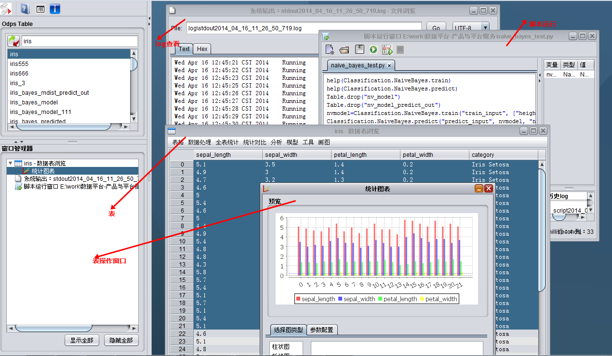数据表¶
XLab的主要操作均是基于数据表ODPS Table的，即输入数据和输出数据均存储在ODPS Table中。因此，XLab的主要功能的展现是伴随着数据表的，比如数据表属性查看，数据表操作(导出、统计、显示)等，如下图：
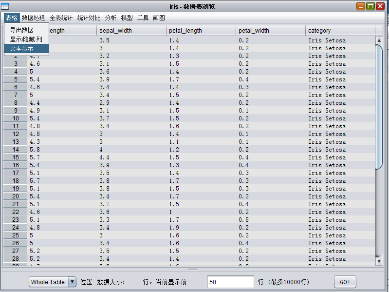数据表属性¶
当用户需要了解数据表属性时，在ODPS Table列表选中表名，右键选择”属性”，如属性的信息包括以下的信息：数据列定义中可以看到表的列名，列类型和列对应的注释。
分区的定义和分区的列表，用户可以点击左下角的”刷新行数”按钮得到分区和总表的行数信息，或者点击右下角”打开”按钮进行数据表浏览，如下图：
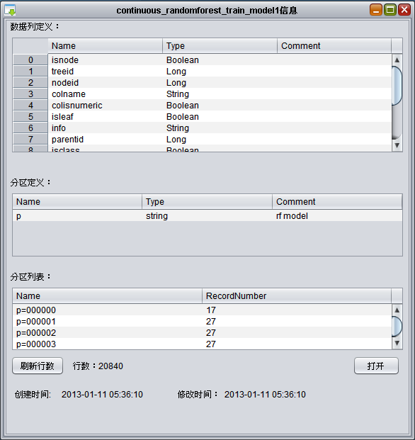{kind=link}
数据表操作¶
当用户需要对数据进行表格浏览和操作时，ODPS Table列表双击表名，进入数据表浏览界面。表下方显示当前显示的数据信息，最多显示10000行，左下角可以按分区(partition)显示数据，默认所有分区(Whole Table)。
- 无分区的表，分区(partition)为Whole Table，比如表iris，如下图：
{kind=link}
- 有分区的表，默认分区(partition)为Whole Table，比如表iris_bayes_model，可选择分区：pt=000000查看数据，如下图：
{kind=link}
{kind=link}
统计图¶
在数据表浏览或者数据导出表中选中要展示的数据，点击画图->统计图，可以使用统计图功能，如下图：
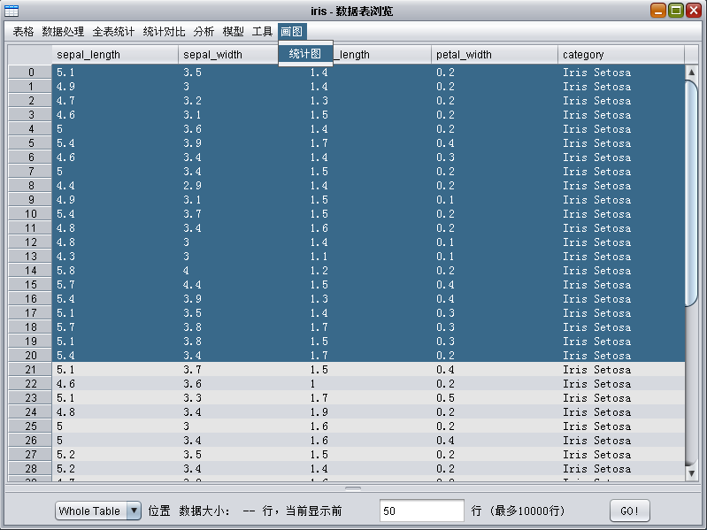{kind=link}
或者：
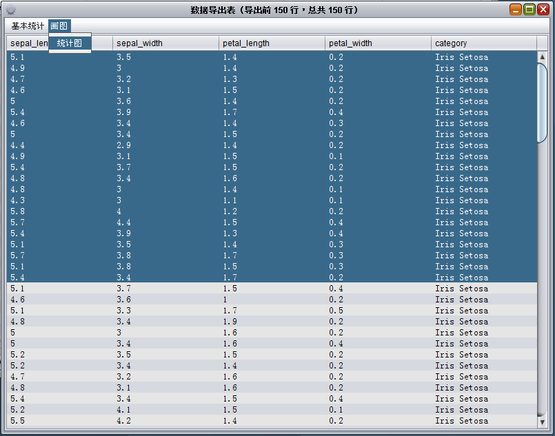{kind=link}
打开统计图界面，如下图：

使用选择图类型选项页可以分别选择柱状图，折线图，散点图，条形图或者饼图，每种不同类型的图下有一种或者多种样式。点击确定按钮可以弹出当前预览的大图表示。
在参数配置选项页下可以分别选择x轴或者y轴的参考列，如下图：
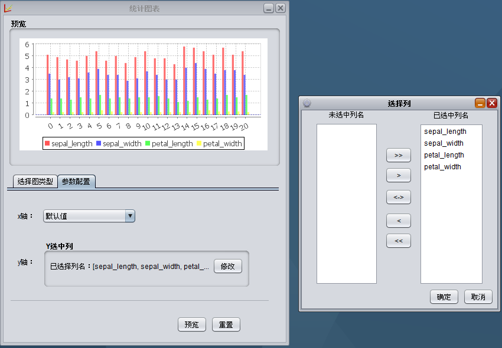{kind=link}
选中对应的列之后，点击预览可以看到所选择参数和所选择图类型对应的统计图的预览。
统计图遵守以下规则：
- 不支持空值和NaN等非法值。
- 所有的y轴必须为数值类型(整形、浮点型)。
- 当x轴有重复值时，取最后一个值。
- 默认情况下，x轴使用行号来代替。
- 饼图为一列，分类x轴所选值，值为y轴对应值。
- 柱状图，折线图，条形图中，分类值为列名，x轴和y轴对应图中x和y。
- 散点图中如果x轴选中的为非数值类型的数据，则用行号来代替。
{kind=link}
{kind=link}